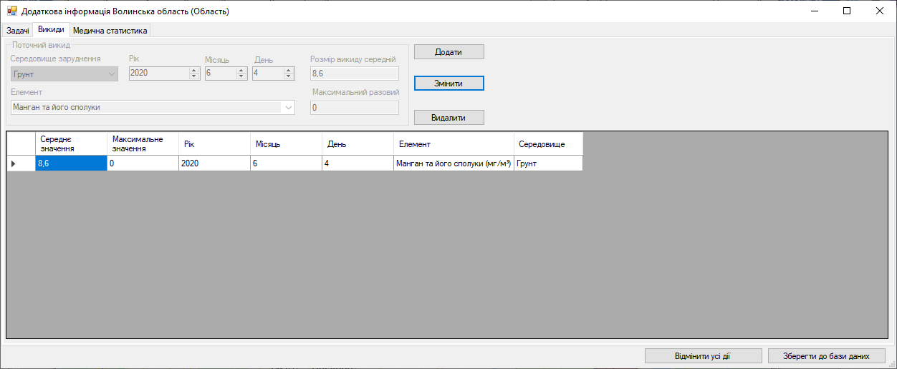

Крок 11. Вкладка «Викиди». Видалення запису

Експерт
обирає
неактуальний
запис в таблиці
, натискаючи на нього.
Компоненти заповнюються даними з таблиці.
Потім
натискає кнопку «Видалити»
. Після чого запис зникне з таблиці.